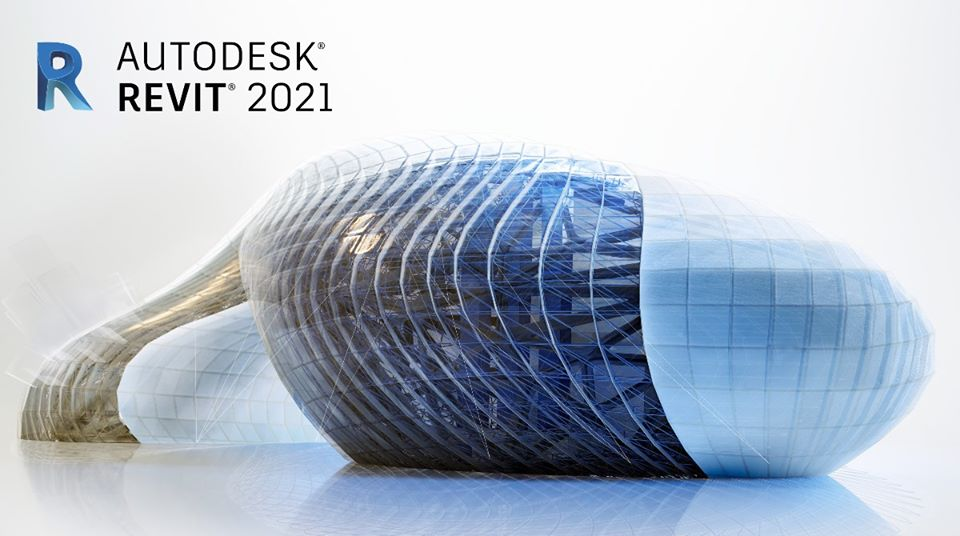

Revit은 건축설계 프로그램은 autocad와 연계해야 많이 사용되고 있습니다. 현재 BIM 관련 사무실이 많이 생겨나고 부서도 생겨나면서 많이 사용됩니다. 3D로 설계 의도를 정확하게 포착하고 소프트웨어를 조직적이며 완벽한 모델로 설계를 완성화합니다. 평면만 있으면 입면도 및 단면도 3D 모델링 까지 자동으로 진행이 됩니다. 3D를 통해 완전한 건물의 실제 모습을 볼 수 있게 됩니다. revit는 건축설계 구조설계 설비 설계 시공전문가 등을 위한 도구가 포함되어있어 전문적으로 일을 수행할 수 있게 도와줍니다. 모든 분야의 작업자와 협업하여 공유하여 같은 프로젝트를 동시에 같이 진행 할 수 있습니다. 캐드와 호환되어 revit의 기능을 확장해줍니다.
여러 전문가와 협업하여 다른 분야 일을 통합하여 건물을 설계해 나갈 수 있습니다. 평면을 올리면 설계 배관 구조계산 물량산출이 이루어져 시공 시의 공사비 및 공사방법 오차범위를 줄일 수 있습니다. 기술 변화의 폭을 넓혀주고 건물운영에 변화를 만들어줍니다. 건축 설계 시에는 어느 정도의 공사된 모델을 확인할 수 있어 설계 시에 이를 적용하여 시공 시의 하자를 줄여줍니다.
또한, 3D를 보면서 설계요소 구조적 요소를 고려하여 더욱더 확실하고 아름다운 디자인을 추구할 수 있습니다. 설계를 하다 보면 구조적 문제와 설비적 문제로 부딪히게 되는데 이를 사전에 방지할 수 있게 됩니다. 설계 시 이를 고려하여 설계하지만 구조와 설비에 대해 많은 정보를 알지 못하기 때문에 협업자를 통해 설계가 이루어집니다. revit을 이용하게 되면 협업자의 협의 시간이 줄게 되고 설비에 대한 이해도 쉽게 할 수 있게 됩니다. 워크플로우를 사용하여 설계별 시방서 작성과 설계공정을 진행할 수 있게 됩니다. 구조설계에서는 협업자의 조정 관계를 정리한 뒤 설계를 토대로 분석하여 기둥 및 보위치 철근 배근 수 등 다양한 구조계산이 이루어지는 것을 볼 수 있습니다. 설비 설계에서는 건물 전체의 세부 조정작업을 도와줍니다. 복잡한 설계에 적용하여 물량산출의 요소를 줄이고 시공의 문제점을 줄여 혁신적인 건물 디자인 작업을 할 수 있습니다.
이상으로 건축 종합프로그램인 Revet에 대해 알아보았습니다. 점차 단순화된 프로그램이 계속해서 발전해오고 있습니다. 건축설계에서도 이를 적용하기 위해 많은 시행착오를 거치며 지속해서 발전해나갈 것 같습니다. 오토캐드도 자리를 잡기까지 많은 시간이 걸렸는데 Revet도 마찬가지로 시간이 지나면 설계를 진행하는 주요 프로그램으로 자리를 잡을 것 같습니다. 좀 더 프로그램이 발전되고 다양한 틀의 개발로 인하여 많은 사람이 쉽게 접근하게 되고 설계 시간의 단축이 이루어질 것 같습니다.
